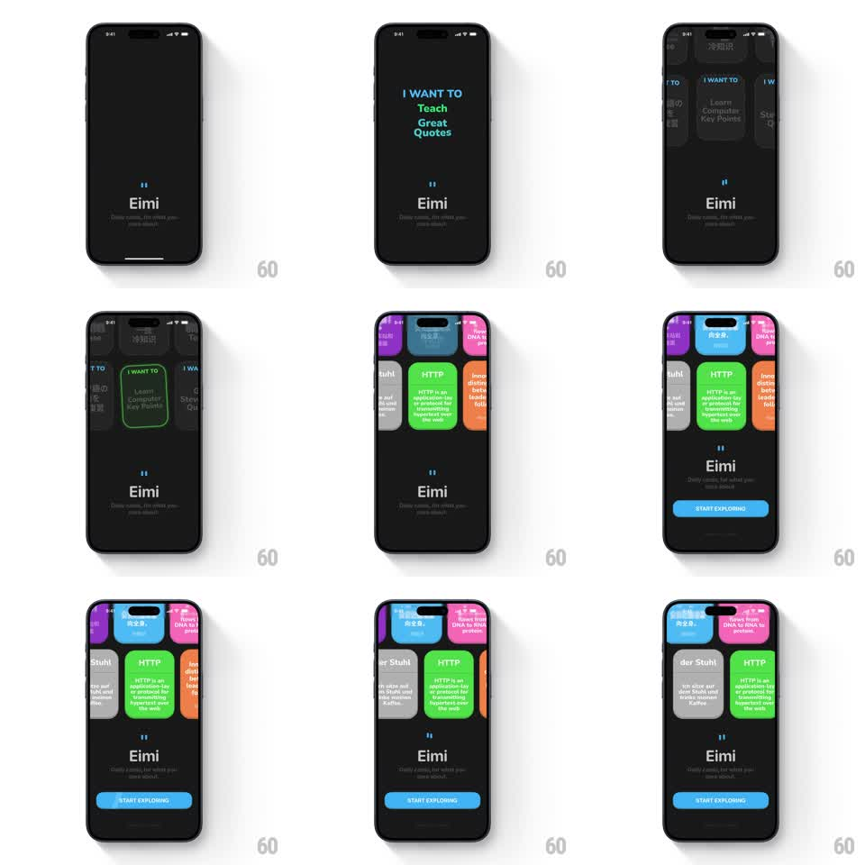

Media
Frame-by-frame

Rebuild this animation 1:1: Eimi's intro sequence - kinetic phrases ("I WANT TO Read", "Medical Knowledge", "Learn Computer Key Points") flash and morph into a row of colored topic cards that settle into a horizontal scroll, ending on START EXPLORING.

Rebuild this animation 1:1: Eimi's intro sequence - kinetic phrases ("I WANT TO Read", "Medical Knowledge", "Learn Computer Key Points") flash and morph into a row of colored topic cards that settle into a horizontal scroll, ending on START EXPLORING.
## Integration
Integration: stack-agnostic spec - springs given as stiffness/damping, timed motions as duration + curve; map every value to your framework and animation library of choice.
## Scene
Eimi onboarding, black: "Eimi" wordmark with the quotation-mark glyph. The sequence: colored kinetic phrases appear in the middle ("I WANT TO Read" blue/green, "Medical Knowledge" orange, "Learn Computer Key Points" green/orange), then a horizontal carousel of colored topic cards (green HTTP, purple, blue, pink, grey, orange) forms, and a blue "START EXPLORING" button appears.
## Motion spec
Pattern: kinetic text morphing into a card carousel.
- Each phrase slams in word by word (scale 1.3 -> 1, 150ms per word, 80ms apart), holds 600ms, then the words slide apart and fade (250ms) as the next phrase slams in.
- After the last phrase, the words' letterforms scatter outward and each colored word-block condenses into a card: the phrase's color field expands into a rounded card (shape morph, 400ms ease-in-out) and card content (title + body text) fades in (250ms).
- Cards arrange into a horizontal row across the upper half, sliding into position from center (translate + scale, 350ms, staggered 70ms) with the center card slightly raised.
- The row then drifts into an idle horizontal scroll (auto-scroll ~24px/s, pausing on touch; edges fade).
- "START EXPLORING" fades up at the bottom (300ms) once the row settles.
## Calibration
- A phrase's color becomes its card's color - the morph keeps color identity per word-block.
- Cards are flat saturated colors with dark text - Eimi's palette, no gradients.
## Reduced motion
Phrases crossfade (250ms); cards fade into the row already placed.
## Don't miss
- The wordmark and its quote glyph stay fixed at center-bottom through the whole sequence.
- The carousel's idle auto-scroll only starts after the morph fully completes.